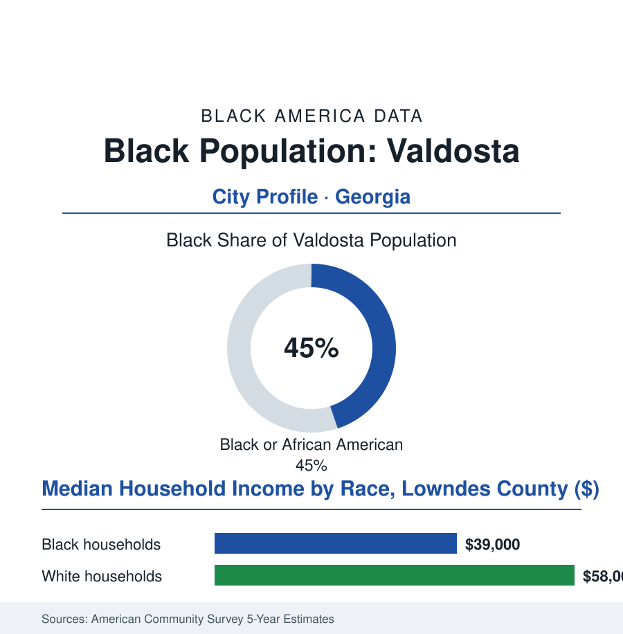

Black Cities
Black Valdosta: 25,000 People at the Florida Line
Valdosta's Black community — nearly half the South Georgia city — was built by tobacco, turpentine, and the railroad, and is kept now by the Air Force base, the university, and the wiregrass's oldest institutions. The numbers.

Valdosta's Black community numbers roughly 25,000 people — about 45% of the city's 55,000 residents — in the South Georgia wiregrass capital at the Florida line, the Azalea City, where the south side's institutions have carried a tobacco-and-turpentine community's weight for a century and a half. This article reads Valdosta's numbers.
Tobacco Rows and the South Side
The founding economies were the wiregrass's own: the longleaf pine's turpentine camps (the naval-stores industry whose Black labor force, in its camps across the flatwoods, worked one of the South's harshest labor systems — the camp's commissary and debt the era's records preserve in grim detail), the bright-leaf tobacco that succeeded it, the railroad that made Valdosta the region's crossroads, and the county-seat commerce that followed. The community that formed in the camps' and the town's Black districts built the era's standard kit with a completeness the section has learned to expect at this scale: the churches of the south side, the segregated schools whose alumni associations now function as the community's archive, the Black business strip serving the Saturday trade of a whole wiregrass hinterland — the farmers of five counties cashing the tobacco checks and buying the school clothes on the same blocks. The civil-rights decades ran the wiregrass course in the local record (the lunch counters and the library, the school orders implemented across the Lowndes County of the late 1960s), and the cultural file adds the city's singular American note: Valdosta's orphan trains' dark mirror and its famous Christmases aside, its deepest national entry may be the motion-picture era's — the city as one of the South's great movie-palace towns — an honor the Black theaters of the south side shared in their own parallel circuit, the balcony-and-storefront screenings in the oral histories. The base arrived as the modern economy's foundation: Moody Air Force Base, at the county's north, anchoring the federal payroll — and, per this book's recurring pattern, the military pipeline that carried the community's young people out to the world and, in the retiree rows, back to the wiregrass with pensions.
The Wiregrass Ledger
The school rows give the county's forward signal its clearest form: Lowndes and Valdosta's two systems together educate a student body roughly half Black, and the state report cards post the section's familiar split — the elementary cohorts' reading gains against the middle years' mathematics wall — fought here with the region's instruments: VSU's education college supplying the faculty pipeline, the base's own school-liaison programs, the churches' tutoring ministries in their second generation. The wiregrass's future workforce is sitting in those classrooms. The file keeps the count.
The modern balance in the county survey: the Black household median in the high thirty-thousands against the high fifty-thousands beside it, the poverty rows concentrated on the south side the economy was built on, the employment pillars the region's standard set — the base, Valdosta State University (the regional university grown into a top employer, its Black enrollment among the state system's strongest in the region), the medical center, the distribution warehouses of the interstate corridor at the Florida line. The demographic rows carry the Black Belt's signature in a small city: the share just under half and holding, the out-migration's Atlanta pull against the region's powerful counter-magnet — the land, the kin, the wiregrass itself drawn in the return rows of the census file's southern-rural chapter. The community's forward data run through its institutions' present tense: the south side's churches in their second centuries, the alumni's scholarships, the Juneteenth and azalea-season observances the city's calendar holds in common — and the familiar fight of this book's small cities entire: the growth's northward run (toward the base and the interstate, in the development map) against the south side's claim on the reinvestment file. The file's verdict is the community's, delivered in the anniversary sermons the south side keeps giving: the wiregrass grows its people the way it grows its pines — slow, straight, and all the way down to the root.
Reading Valdosta's Numbers
Twenty-five thousand people, forty-five percent, one wiregrass capital: Valdosta is the Black Belt's southern gate — small, nearly half, entire. The census counts the share. The south side — church fans moving in the heat, the alumni in their school colors — counts the substance, and wins.
More in Black Cities
Black Atlanta: Population, Distribution, and Growth of a Black Metropolis
Metro Atlanta holds more than two million Black residents — roughly one in three, second only to New York. The suburban distribution, migration history, and composition of Black Atlanta in the census data.
Black New York: The Largest Black Population in America
The New York metropolitan area holds about 3.4 million Black residents — more than any metro in the nation — and the city itself about two million. The census profile.
Black Washington: The District and the Metro
The Washington metro holds about 1.6 million Black residents, and the District itself — long a majority-Black city — now records a Black share near 41 percent. The census profile.
Source: U.S. Census Bureau, 2020 Census and American Community Survey 5-year estimates; City of Valdosta and Lowndes County records; Valdosta State University data.